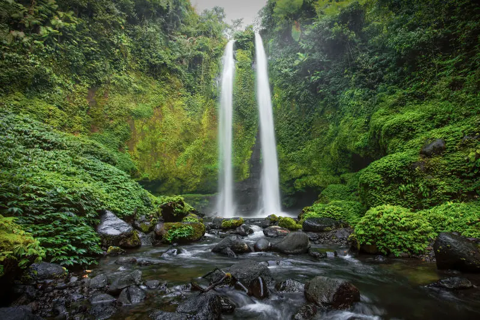
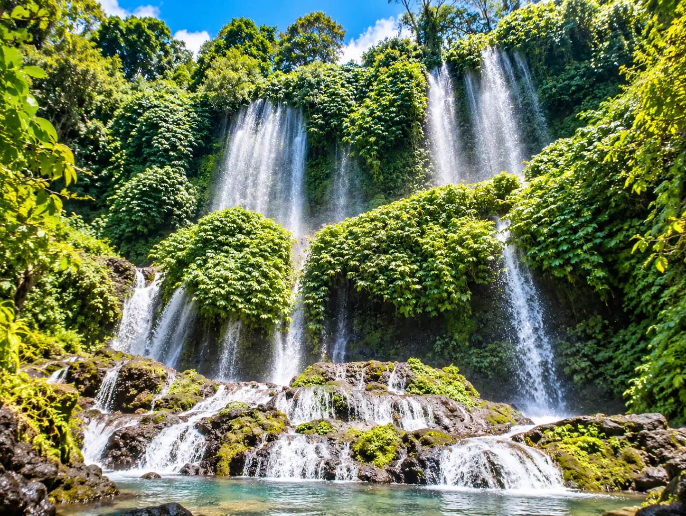

Sumba is one of Indonesia's richest islands for unspoilt waterfalls — most of them nestled at the end of well-deserved trails. Here are the 8 that we recommend, classified by area, with access, difficulty and the best time to go for each.

Center
Lapopu Waterfall
The highest waterfall in the province (90m), easy access.
Center
Matayangu Waterfall
Three distinct falls, Marapu sacred site.

West
Weekacura Waterfall
Nestled in the middle of the rice fields, mysterious source.

West
Lokomboro Waterfall
30m high, powers a local hydroelectric installation.

West
Waikelo Sawah
Hidden waterfall in the rice fields, cave with war history.

East
Tangedu Waterfall
Nicknamed the Grand Canyon of Sumba.

East
Waimarang Waterfall
Turquoise pool, legend of the bath of angels.

East
Koalat Waterfall
River crossing on the way, still confidential.